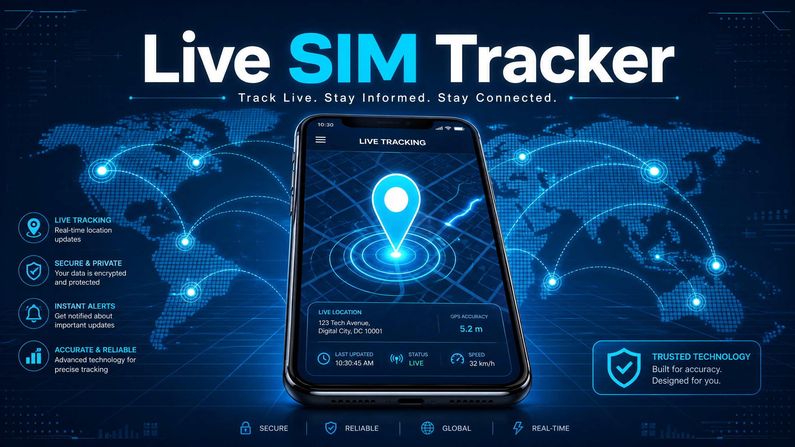

Track Live. Stay Informed. Stay Connected.
Interactive Live SIM Tracker
Complete the steps below to find official tracking methods.
Legal Agreement
By proceeding, you agree that you will use this information only for legal purposes. Unauthorized tracking is prohibited.
Processing Request...
Searching official databases. Please wait 10 seconds.
Official Tracking Methods
A Live SIM Tracker helps people understand SIM-related information and mobile network details. Many users believe it can show a phone's exact live location. That idea creates confusion. In reality, a SIM card does not work like a GPS tracker.

A Live SIM Tracker Online usually focuses on SIM information, network details, or registration records. It does not provide real-time location access to the public. Mobile network operators protect subscriber data through strict privacy and security rules.
This guide explains what a SIM Tracker can and cannot do. You will learn how SIM cards work, how mobile networks identify devices, and what information you can legally access. We will also explain the difference between SIM tracking, GPS tracking, and mobile number verification.
Whether you want to check SIM details, understand a Mobile Number Tracker, or use a SIM Information Checker, this guide provides accurate and trustworthy information. Every section follows current industry practices and avoids common myths.
By the end, you will know how SIM tracking works, its real limitations, and the safest ways to verify SIM-related information. The information in this guide is based on official mobile technology standards and trusted industry sources, including the GSMA, the 3rd Generation Partnership Project (3GPP), and guidance from mobile device manufacturers.
What Is a Live SIM Tracker?
Definition of a Live SIM Tracker
A Live SIM Tracker is a tool or service that provides information linked to a SIM card. It may display details such as the mobile network, SIM status, or registration information. Many people also search for a SIM Tracker or Mobile Number Tracker because they want to locate a phone or verify a mobile number.
However, the term often creates confusion. Many websites claim they can show a phone's exact live location through its SIM card. That is not how mobile technology works. A SIM card identifies a subscriber on a mobile network, but it does not broadcast a public live location.
People usually search for a Live SIM Tracker to check SIM details, verify a number, or understand how SIM tracking works. Knowing what is technically possible helps you avoid misleading claims and choose reliable information.
How SIM Cards Work in Mobile Networks
A Subscriber Identity Module (SIM) stores information that identifies your mobile subscription. When you insert the SIM into a phone, it connects to your mobile carrier. The network checks the SIM before allowing calls, messages, or mobile data.
This process is called authentication. It confirms that the SIM belongs to a valid subscriber. If the check succeeds, the phone connects to the carrier's GSM, LTE, or 5G network.
The SIM does not store your live location. Instead, the mobile network knows which nearby cell tower your phone uses to stay connected. Mobile carriers manage this information securely to operate their networks and protect customer privacy. Industry standards from GSMA and 3GPP define how SIM authentication and network access work.
Can a SIM Card Be Tracked Live?
The short answer is no, at least not by the general public. A SIM card cannot provide its own GPS location. Live GPS tracking depends on the phone, location services, and user permission.
Mobile carriers can estimate a device's location for network operations or when required by law. They do not provide public access to live subscriber locations. This is why most websites promising Live SIM Tracking or exact SIM Location results should be treated with caution. Reliable Mobile Tracking combines authorised location services, device features, and privacy protections rather than relying on the SIM card alone.
How Live SIM Tracking Actually Works
Role of the SIM Card
A SIM card connects your phone to a mobile network. It stores a unique subscriber identity that helps your carrier recognise your account. When you turn on your phone, the SIM requests access to the network. The carrier verifies the request before allowing calls, texts, and mobile data.
The SIM does not contain GPS hardware or track your location. Its main job is to identify your subscription and keep your connection secure. This process allows your phone to communicate with nearby network towers while protecting your account.
Role of IMEI and IMSI
A phone uses both the IMEI and IMSI for device identification, but they serve different purposes. The International Mobile Equipment Identity (IMEI) identifies the physical device. The International Mobile Subscriber Identity (IMSI) identifies the mobile subscriber stored on the SIM card.
Another important identifier is the Integrated Circuit Card Identifier (ICCID). It identifies the SIM card itself. Together, the IMEI, IMSI, and ICCID help mobile carriers manage devices, authenticate subscribers, and maintain secure network connections. These identifiers support network operations. They do not allow the public to track a phone's live location.
GPS vs SIM Tracking
Many people confuse GPS Tracking with SIM tracking. They work in different ways. GPS uses satellites to calculate a device's location. It can provide accurate positioning when Location Services are enabled and the user grants permission. Apps such as Google Maps use GPS to deliver navigation and live location features.
A SIM card does not calculate location. It only helps the phone connect to the mobile network. The network can estimate a device's position by identifying the cell tower serving the phone. This estimate is usually less accurate than GPS and depends on tower coverage and network conditions. Modern smartphones often combine GPS, Wi-Fi, Bluetooth, and mobile network data to improve device tracking.
Mobile Network Location Methods
Mobile carriers use several methods to estimate a phone's location. One common method is Cell ID. It identifies the cell tower currently serving the device. This provides a general location rather than an exact address. Another method is triangulation. The network compares signals from multiple nearby towers to estimate where the device is located. Accuracy improves when more towers are available.
These carrier systems help support emergency services, network management, and authorised investigations. Mobile carriers protect this information under privacy laws and do not make live subscriber locations publicly available. Industry standards from GSMA and 3GPP define how these technologies operate and safeguard subscriber information.
What Information Can a Live SIM Tracker Show?
SIM Registration Information
A Live SIM Tracker may display basic SIM registration details when supported by authorised services or official databases. The available information depends on local laws and privacy rules. In many cases, you can verify whether a SIM is active or linked to a specific network operator.
Some services may also confirm the SIM's registration status or mobile carrier. However, they do not reveal private subscriber information without proper authorisation. Mobile carriers protect customer records through strict security measures. Always use trusted sources when checking SIM details. Official telecom authorities and mobile operators provide the most reliable information.
Mobile Network Information
A Live SIM Tracker may identify the network operator connected to a mobile number. It can also show the country, network type, or carrier information. This helps users confirm whether a number belongs to a supported mobile network.
Some tools display the network technology, such as GSM, LTE, or 5G. Others may show whether the number has changed to another carrier through number portability. The exact details vary by service and available data.
Device Information
A Live SIM Tracker does not reveal every detail about a phone. However, some authorised services can identify limited device information. This may include the device model, manufacturer, or status when linked with official carrier records. Network systems also use identifiers such as the IMEI to recognise a device and the ICCID to identify the SIM card. Public tools cannot access private device records without permission.
Location Information Limitations
Many users expect a Live SIM Tracker to display a phone's exact location. In reality, this is not how SIM technology works. A SIM card does not contain GPS hardware or send live location updates. Mobile carriers can estimate a device's position using nearby cell towers. This information supports emergency services, network management, and other authorised purposes. It is not available to the public through ordinary SIM tracking websites.
Accurate mobile number details do not include a person's live location. Real-time location usually comes from Location Services on the device. These services rely on GPS, Wi-Fi, Bluetooth, and nearby cell towers. They also require user permission before sharing location data. Understanding these limits helps you avoid misleading claims and choose trustworthy services for checking SIM details and network information.
Live SIM Tracker vs GPS Tracker
People often use the terms Live SIM Tracker and GPS Tracker interchangeably. However, they work in different ways. Understanding the difference helps you choose the right solution for your needs.
Key Differences
A SIM Tracker focuses on information linked to a SIM card and the mobile network. It helps identify details such as the network operator, SIM status, or registration information. It does not determine a phone's exact location.
A GPS Tracker uses satellites to calculate a device's position. It provides accurate location data when Location Services are enabled. Most smartphones use GPS together with Wi-Fi and nearby cell towers to improve accuracy. Another key difference is data access. Mobile carriers manage SIM-related information and protect it with strict privacy rules. GPS location remains under the device owner's control.
| Feature | SIM Tracker | GPS Tracker |
|---|---|---|
| Primary purpose | Verify SIM and network information | Find a device's location |
| Main technology | Mobile network | GPS satellites |
| Location accuracy | General network area | High accuracy outdoors |
| Uses GPS | No | Yes |
| Uses cell towers | Yes | Yes |
| Requires location permission | No | Yes |
| Best for | SIM details and verification | Real-time device tracking |
Advantages of SIM Tracking
A SIM Tracker is useful for checking SIM details and confirming mobile network information. It can help verify a mobile number, identify the carrier, and check whether a SIM is active. Businesses use SIM information to manage connected devices across different networks. Users also benefit when confirming carrier details before switching networks or troubleshooting connection issues.
Advantages of GPS Tracking
A GPS Tracker is the best choice for accurate device tracking. It calculates a phone's position using satellite signals instead of relying only on the mobile network. Navigation apps like Google Maps use GPS to provide turn-by-turn directions. Family safety apps use it to share live locations with approved contacts. GPS tracking also powers services such as Find My Device on Android and Find My on iPhone.
Common Uses of Live SIM Trackers
A Live SIM Tracker supports several practical tasks beyond checking SIM details. While it cannot reveal a person's exact live location, it helps users verify network information, manage connected devices, and improve mobile security.
Finding a Lost Phone
A Live SIM Tracker can help confirm the network operator linked to your SIM card. This information may support the recovery process after losing a phone. However, it cannot show the phone's exact location. For accurate tracking, use your device's built-in tools like Google Find My Device or Apple Find My.
Managing Business Devices
Many businesses manage phones, tablets, and connected devices with SIM cards. A Live SIM Tracker helps verify SIM status, carrier information, and network connections across multiple devices. This information helps IT teams monitor active SIM cards and resolve network issues faster.
Family Safety
Families often want to know that loved ones are safe. A Live SIM Tracker can verify network information, but it cannot replace dedicated location-sharing apps. For trusted family location sharing, use built-in services with the owner's permission.
Fraud Detection
SIM information helps identify suspicious mobile activity. Users can verify whether a mobile number belongs to the expected network operator or check if a SIM remains active. Businesses also use SIM verification to reduce account fraud and detect unusual changes.
SIM Verification
SIM verification confirms that a SIM card is correctly registered and connected to the intended mobile network. This process helps users check SIM details, confirm carrier information, and identify registration issues. Always use official telecom providers or authorised services when checking SIM information.
What You Need Before Using a Live SIM Tracker
Before using a Live SIM Tracker, make sure you have the right information and access. A few simple checks can save time and help you get accurate results. These steps also protect your privacy and keep your personal data secure.
Mobile Number
Start with the correct registered mobile number. Enter the full number, including the country code if required. A small typing mistake can return incorrect results or no information at all. Double-check the number before starting your search to improve accuracy.
Registered SIM
Your SIM card should be active and properly registered with your network operator. In many countries, users must complete SIM verification before using mobile services. An inactive, blocked, or unregistered SIM may not appear in authorised databases.
Authorized Access
Some mobile apps need permission to access features such as Location Services, contacts, or the device's network status. Only grant permissions that are necessary for the app to work. Review each request carefully before accepting it. Download tracking or verification apps only from trusted sources.
Internet Connection
Most Live SIM Tracker services need an active internet connection to check available records or communicate with online databases. A stable Wi-Fi or mobile data connection helps the service load information quickly and reduces errors during the search.
Step-by-Step Guide to Checking SIM Information
Checking your SIM details is simple when you use trusted sources and follow the correct steps. This process helps you verify your SIM, confirm your mobile network, and review basic device information.
Step 1: Verify SIM Registration
The first step is to confirm that your SIM card is properly registered. An active and registered SIM connects to your mobile network without issues. Visit your network operator's official website or mobile app. Enter your registered mobile number if requested and follow the verification process.
Step 2: Identify Your Network Operator
Next, identify the network operator connected to your mobile number. You can check this through your carrier's app, your phone's network settings, or an authorised Mobile Number Lookup service. Knowing your network operator helps when troubleshooting connection issues.
Step 3: Check Device Information
Now review your device information. Open your phone's settings and find details such as the device model, software version, and IMEI number. These details help identify your device if you contact customer support or report a lost phone.
Step 4: Use Built-in Phone Features
Modern smartphones include tools that help you manage your SIM and device safely. On Android, use Google Find My Device to locate your phone. On iPhone, use Apple Find My to view its location or play a sound. These built-in features offer greater security than unknown third-party services.
Step 5: Protect Your SIM Information
Protecting your SIM details is just as important as checking them. Keep your SIM registered with accurate information and report a lost or stolen SIM to your carrier immediately. Avoid sharing your mobile number or verification codes with unknown websites.
Common Problems and Solutions
Even when you use a trusted Live SIM Tracker, you may face occasional issues. Most problems have simple solutions. Understanding the cause helps you fix the issue faster and avoid unnecessary confusion.
SIM Information Not Found
If no SIM details appear, first check that you entered the correct mobile number. A missing country code or typing error can prevent the system from finding a match. Also, make sure the SIM is active and registered with your network operator.
Incorrect Registration Details
Incorrect registration information may appear if your SIM records have not been updated. Review your account information through your mobile carrier's official website or app. If you find incorrect records, contact customer support and request an update.
Network Errors
A network error can stop a SIM Information Checker from displaying results. Poor internet connectivity or temporary server issues are common causes. Check your Wi-Fi or mobile data connection and refresh the page.
Location Not Available
Many users expect a Live SIM Tracker to display a phone's exact location. In most cases, this is not possible. A SIM card does not provide real-time GPS data or public location access. Use trusted tools like Google Find My Device or Apple Find My for locating your own phone.
Privacy, Security, and Legal Considerations
Protecting your personal information is just as important as checking your SIM details. Mobile networks use strong security measures to keep subscriber data safe. Understanding your rights and responsibilities helps you use a Live SIM Tracker safely and legally.
Why Privacy Matters
Your SIM card connects to your digital identity. It links your mobile number, network account, and other important services. If someone gains unauthorised access to your SIM information, they may misuse your account or attempt fraud. Always protect your personal information and use only official websites.
Legal Limits of SIM Tracking
Many people believe they can track any SIM card online. In reality, privacy laws prevent public access to another person's live location or personal subscriber information without legal authority. Mobile carriers do not provide unrestricted public access to this information.
Keeping Your SIM Secure
Good mobile security starts with simple habits. Keep your SIM registered with accurate information and report a lost or stolen SIM card to your network operator immediately. Enable two-factor authentication and use a strong screen lock.
Live SIM Tracker Myths vs Facts
Many websites make bold claims about Live SIM Trackers. Understanding the facts helps you avoid scams and make informed decisions. The table below separates common myths from verified information.
| Myth | Fact |
|---|---|
| Any SIM can be tracked live. | False. The public cannot track a SIM card's live location. |
| A SIM card provides GPS location. | False. A SIM card does not contain GPS hardware. |
| All Live SIM Tracker websites are accurate. | False. Many websites make unsupported claims. |
| A Live SIM Tracker can reveal anyone's personal info. | False. Privacy laws prevent public access to private data. |
| Mobile carriers protect subscriber data. | True. Carriers use strong security measures to safeguard info. |
| SIM registration is the same as location tracking. | False. Registration confirms ownership, not location. |
| GPS tracking and SIM tracking work the same way. | False. GPS uses satellites; SIM connects to mobile network. |
| Official tools are more reliable than unknown websites. | True. Services like Google Find My Device are secure and official. |
Frequently Asked Questions
Final Thoughts
A Live SIM Tracker helps users understand SIM-related information and verify basic network details. It is useful for checking SIM details and confirming the network operator. However, it is not a tool for publicly tracking someone's live location. Privacy should always come first. Use trusted services and follow local laws when checking SIM information.
About Us
About Live Tracking PK
Welcome to Live Tracking PK. Live Tracking PK is an informational website that publishes educational content about SIM cards, mobile networks, device tracking, GPS technology, mobile security, and related topics. Our goal is to provide accurate, easy-to-understand, and well-researched information based on official sources whenever possible.
We do not provide live location tracking, phone hacking, SIM hacking, surveillance services, or access to private subscriber information. Our content is created for educational and informational purposes only and is regularly reviewed for accuracy.
Website: https://livetrackingpk.github.io
Contact: gullsher63127@gmail.com
Contact Us
If you have any questions, suggestions, or feedback, feel free to contact us. We aim to respond to all genuine enquiries as soon as possible.
Website: https://livetrackingpk.github.io
Email: gullsher63127@gmail.com
Privacy Policy
Your privacy is important to us. Live Tracking PK does not collect personal information unless you voluntarily contact us. We may use cookies and third-party services, including Google AdSense and Google Analytics, to improve website performance and display relevant advertisements.
Third-party vendors may use cookies to serve ads based on your previous visits to this website and other websites. We do not sell, rent, or share your personal information with third parties except where required by law. By using this website, you agree to this Privacy Policy.
For any privacy concerns, contact: gullsher63127@gmail.com
Terms and Conditions
By using Live Tracking PK, you agree to these terms. The information on this website is provided for educational and informational purposes only. You agree not to misuse the website or rely on its content for illegal activities. We make reasonable efforts to keep our content accurate and updated but cannot guarantee that every article is complete or error-free. We reserve the right to update, modify, or remove content at any time without prior notice.
Disclaimer
Live Tracking PK is an educational website. We do not provide: Live SIM tracking, Real-time phone location, Phone hacking, SIM hacking, Spy services, or Access to private subscriber data. All articles are published for educational and informational purposes only. Any references to tracking technologies explain how they work using legal and official methods. Users are responsible for complying with applicable laws and regulations in their country.
Cookie Policy
Live Tracking PK uses cookies to improve user experience and website performance. Cookies may be used by Google AdSense, Google Analytics, and for essential website functions. You can disable cookies through your browser settings at any time. By continuing to use this website, you agree to our use of cookies.
Sources and References
We strive to publish accurate and trustworthy information. Our content is researched using official and reputable sources whenever possible, including: GSMA, 3GPP, Google Android Help, Apple Support, Official Mobile Network Operators, Official Telecom Regulatory Authorities, and Device Manufacturer Documentation. Every effort is made to verify facts before publication.
DMCA / Copyright Policy
All original content published on Live Tracking PK is protected by copyright. You may not copy, reproduce, or republish our content without written permission. If you believe that any content on this website infringes your copyright, please send a DMCA notice to: gullsher63127@gmail.com. After verification, we will take appropriate action as quickly as possible.